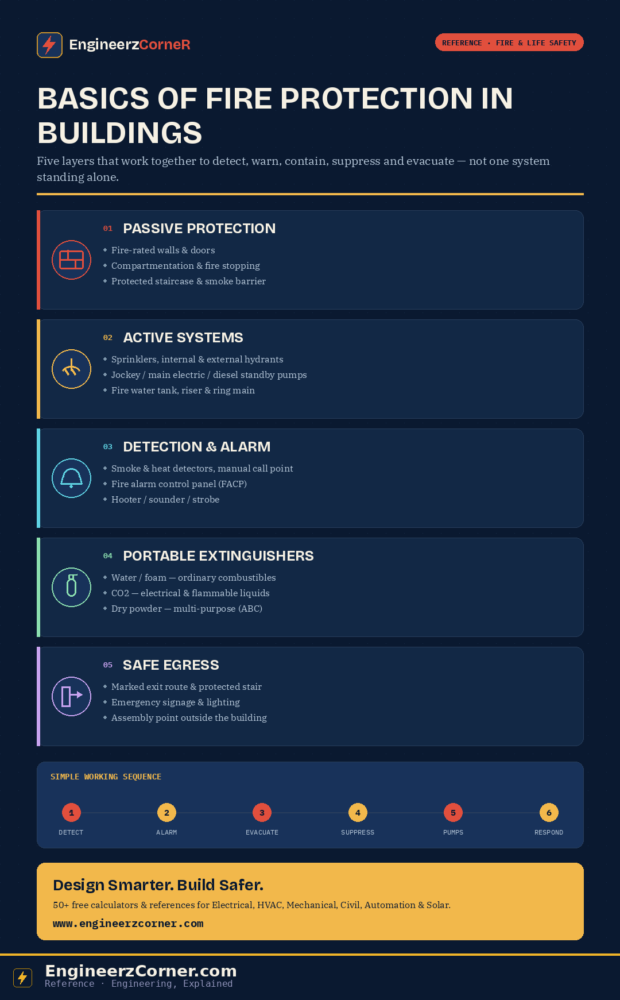

A building's fire protection strategy is usually described as a single idea — "the fire system" — but it's actually five distinct layers stacked on top of each other: passive construction, active suppression, detection & alarm, portable first-aid firefighting, and safe evacuation. Each layer covers a gap the others don't, and a building is only as protected as its weakest layer.

Passive protection, active systems, detection, suppression and safe egress — the five layers of building fire protection.
1. Objective of fire protection
Every component described below exists to serve one of six goals. Before looking at individual systems, it's worth keeping these in view, because they're the reason the layers are designed the way they are.
- ✓Detect fire early — the sooner a fire is confirmed, the smaller the response needs to be.
- ✓Warn occupants — an alarm is only useful if people hear it and act on it fast.
- ✓Control or suppress fire — stop growth automatically, before it outpaces the building's protection.
- ✓Protect structure — keep load-bearing elements and compartment boundaries intact for as long as possible.
- ✓Support safe escape — give occupants a route and the time to use it.
- ✓Support fire brigade operations — inlets, hydrants and risers exist so external responders can take over quickly.
2. Passive fire protection
Passive protection is built into the structure itself rather than triggered by anything — it doesn't detect or extinguish a fire, it slows fire and smoke spread and keeps escape routes usable for as long as the building's fire rating allows.
| Element | Role |
|---|---|
| Fire-rated walls | Hold back fire and heat transfer between compartments for a rated duration |
| Fire-rated doors | Self-close and seal openings in fire-rated walls without breaking the barrier |
| Compartmentation | Divides the building into fire-resistant zones so a fire stays contained to one area |
| Fire stopping (cable/pipe penetrations) | Seals gaps where services cross fire-rated barriers, closing the weak point compartmentation would otherwise leave open |
| Protected staircase | A fire- and smoke-sealed escape stair, kept tenable so occupants can use it throughout evacuation |
| Smoke barrier | Restricts smoke migration between zones, independent of the fire-rated wall it often sits alongside |
| Refuge / exit route | A defined, protected path from any point in the building to a place of safety |
| Emergency exit signage & lighting | Keeps the exit route visible and identifiable even if normal power and lighting fail |
Passive systems slow fire and smoke spread and protect escape routes — they're what makes the time bought by detection and suppression actually usable.
3. Active fire protection
Active systems detect, alarm and suppress fire — they need power, water pressure and (usually) an electronic trigger to work, which is why they're backed up by redundant pumps and, ultimately, by the fire brigade.
| # | Component | Role |
|---|---|---|
| 1 | Automatic sprinkler system | Discharges water automatically over the fire area once a sprinkler head activates |
| 2 | Sprinkler heads | Heat-activated nozzles that open individually, only where the fire actually is |
| 3 | Internal hydrant / landing valve / hose reel | Manual firefighting connection on each floor, for occupants or fire brigade use |
| 4 | External hydrant / yard hydrant | Outdoor connection point for fire brigade hoses and pumping appliances |
| 5 | Fire brigade inlet | Lets the fire brigade pump water directly into the building's riser from outside |
| 6 | Fire water tank (underground / dedicated) | Dedicated water reserve sized to sustain the system for the design duration |
| 7 | Jockey pump | Small pump that maintains standing line pressure and covers minor leakage |
| 8 | Main electric fire pump | Primary pump that supplies the design flow and pressure once a real demand is sensed |
| 9 | Diesel standby fire pump | Independent, non-electric backup that starts automatically if the electric pump can't run |
| 10 | Fire water riser / wet riser | Vertical pipe, permanently charged with water, that carries supply up through the building |
| 11 | Ring main / fire main | Looped underground main that feeds hydrants and risers from more than one direction |
4. Fire alarm and detection
Detection and alarm are what turn a fire into an event the rest of the building can respond to. The chain runs the same way regardless of building size: something senses the fire, a panel confirms and processes the signal, an alarm sounds, and occupants move.
- Fire Alarm Control Panel (FACP) — receives, processes and annunciates every signal
- Smoke detector — senses smoke particles, the earliest indicator in most fires
- Heat detector — triggers on a rate-of-rise or fixed temperature, used where smoke detectors would false-alarm
- Manual call point — lets an occupant raise the alarm directly, without waiting on automatic detection
- Hooter / sounder / strobe — the audible and visual signal that actually warns occupants
Working flow: Smoke/heat detected → panel receives the signal → alarm activates → occupants evacuate. The same signal that sounds the alarm typically also triggers ancillary actions — releasing magnetic door holds, pressurizing the protected staircase, shutting down AHUs to stop smoke recirculation, and recalling lifts to the ground floor.
5. Portable fire extinguishers
Extinguishers are the smallest tier of active protection — sized for a fire that's still small enough for one person to knock down, not a substitute for the fixed systems above.
| Type | Best against | Avoid on |
|---|---|---|
| Water / Foam | Ordinary combustibles (wood, paper, textiles); foam also on flammable liquids | Live electrical equipment, cooking oil fires |
| CO2 | Live electrical equipment, flammable liquids — leaves no residue | Confined unventilated spaces (asphyxiation risk), outdoor windy conditions |
| Dry powder | Multi-purpose — combustibles, flammable liquids, electrical (ABC-rated) | Confined electronics/server rooms (residue damages equipment) |
Used for first-aid firefighting if safe to do so — if the fire has grown past what an extinguisher can handle, the priority shifts immediately to evacuation, not continued firefighting.
6. Safe egress / evacuation
Every layer above ultimately supports this one — the point of detecting, alarming and suppressing a fire is to keep the escape route usable long enough for everyone to reach safety.
- ✓Clearly marked exit route — a single, unambiguous path from anywhere in the building to a final exit.
- ✓Emergency exit signage — remains legible under smoke and low visibility, directing occupants without hesitation.
- ✓Emergency lighting — keeps escape routes visible if normal power fails.
- ✓Use protected staircase — the fire- and smoke-sealed route occupants are trained to default to, never a lift.
- ✓Proceed to assembly point — a designated area outside the building, far enough away to remain clear of fire brigade operations.
Simple working sequence
- 1Detect fireA smoke or heat detector, or a manual call point, initiates the sequence.
- 2Raise alarmThe fire alarm control panel confirms the signal and activates hooters, sounders and strobes across the affected zone.
- 3Occupants evacuatePeople move through protected exits, guided by emergency signage and lighting, toward the assembly point.
- 4Sprinklers / hydrants / extinguishers help control fireAutomatic sprinkler heads open over the fire; hydrants and extinguishers are used manually where applicable.
- 5Fire pumps maintain water supplyThe jockey pump holds pressure, the main electric pump covers demand, and the diesel standby pump backs it up if power fails.
- 6Fire brigade accesses system and respondsExternal responders connect at the fire brigade inlet or hydrants and take over firefighting from there.
Key component summary
- Fire water storage
- Pump room
- Hydrants (internal & external)
- Sprinkler system
- Fire detectors
- Fire alarm system
- Emergency exits
- Emergency lighting
- Portable extinguishers
- Compartmentation (passive protection)
Applicable codes & standards
| Standard | Covers |
|---|---|
| NFPA 101 | Life Safety Code — egress, occupancy and means of escape |
| NFPA 13 | Installation of automatic sprinkler systems |
| NFPA 14 | Standpipe and hose systems (wet/dry risers) |
| NFPA 20 | Installation of stationary fire pumps |
| NFPA 72 | National Fire Alarm and Signaling Code |
| NFPA 10 | Portable fire extinguishers |
Design should always be cross-checked against the applicable local fire and building code, which may impose additional requirements on top of the NFPA base standard.
Key takeaways
- ✓Passive protection buys time; active systems detect and suppress; alarms warn; egress routes get people out; extinguishers handle what's still small — none of the five layers substitutes for another.
- ✓Three fire pumps — jockey, main electric, diesel standby — exist because each covers a failure mode the other two don't.
- ✓Sprinklers are automatic and local; hydrants are manual and need someone to operate them — most buildings run both.
- ✓The detection chain is always the same shape: sensor → panel → alarm → evacuation, with ancillary actions (door releases, staircase pressurization, lift recall) riding on the same signal.
- ✓An effective fire protection system combines passive protection, active systems, detection, alarm, suppression and safe evacuation to save lives, protect property and support emergency responders.